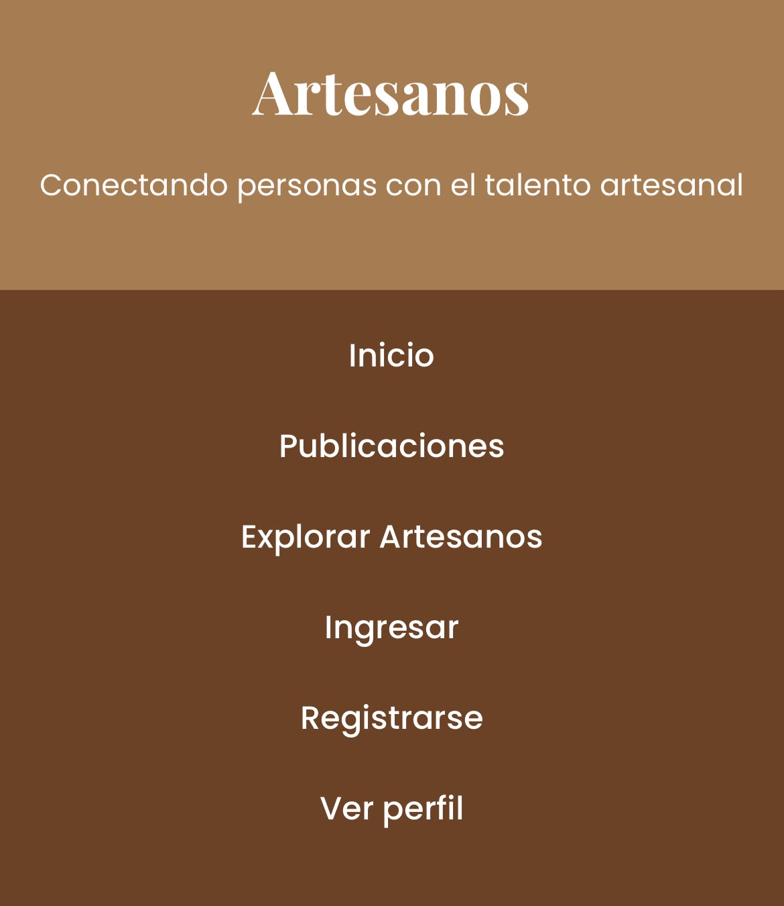
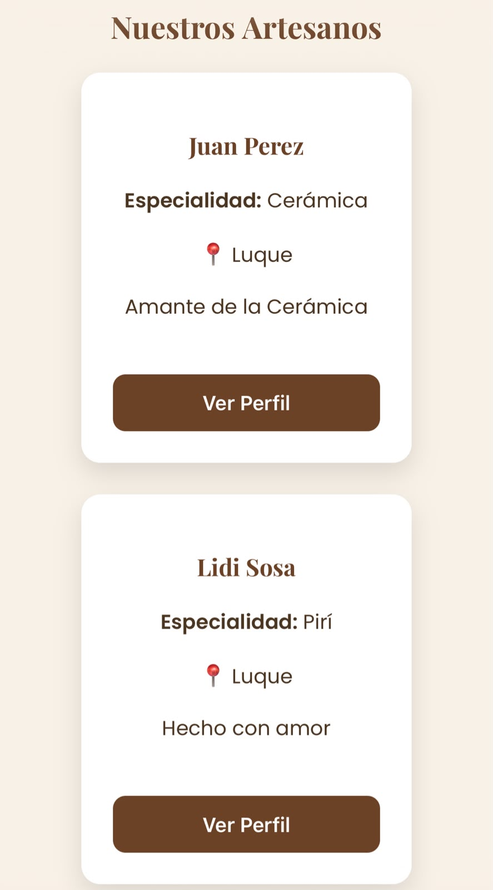
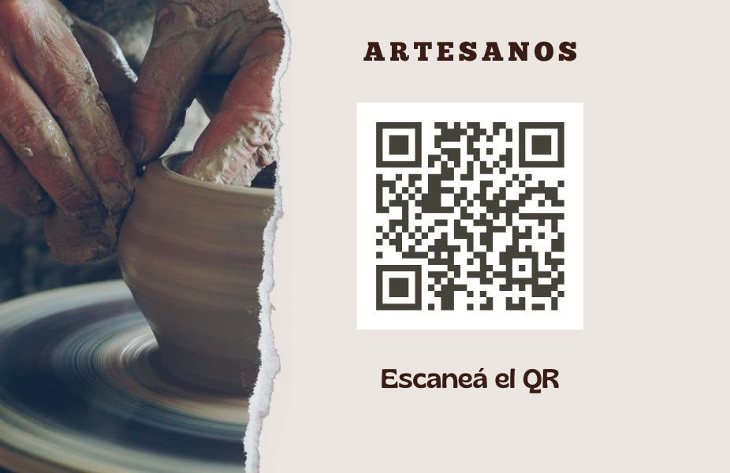
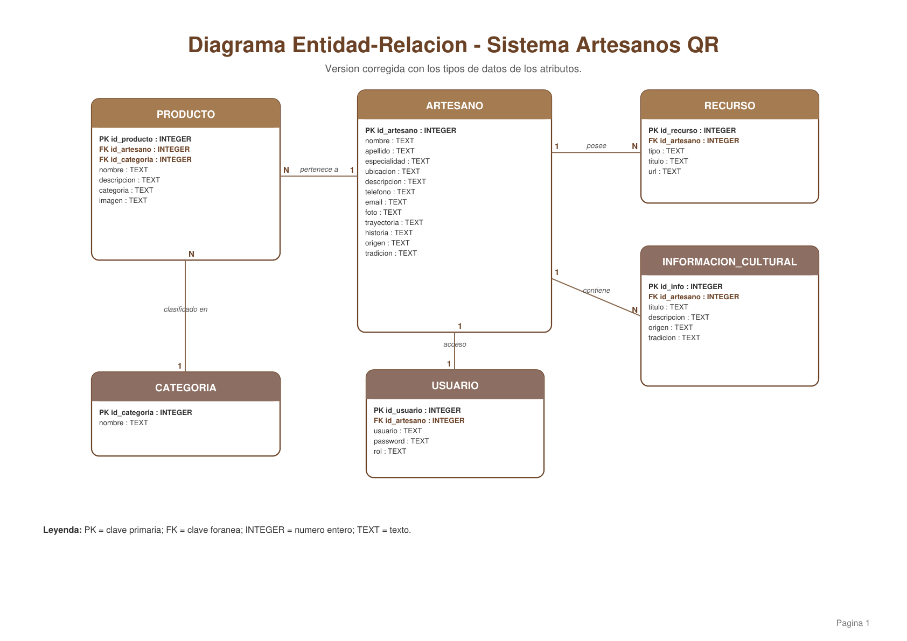

01
El problema
Muchos artesanos tienen dificultades para mostrar sus productos y llegar a nuevas personas debido a la poca difusión de sus trabajos.
Una propuesta tecnológica creada para dar mayor visibilidad al trabajo de nuestros artesanos y facilitar la difusión de sus productos y creaciones.
TRADICIÓN · ARTESANÍA · TECNOLOGÍA
SOBRE EL PROYECTO
Artesanos QR es un proyecto tecnológico que busca utilizar herramientas digitales para acercar el trabajo artesanal a más personas.
Muchos artesanos tienen dificultades para mostrar sus productos y llegar a nuevas personas debido a la poca difusión de sus trabajos.
Crear una solución tecnológica que permita acceder fácilmente a información relacionada con los artesanos y sus productos.
Artesanos, compradores, visitantes y todas las personas interesadas en conocer y apoyar la producción artesanal.
FUNCIONAMIENTO
La propuesta conecta al artesano con las personas mediante el uso de códigos QR.
El artesano cuenta con información sobre sus productos y trabajos.
El código permite acceder rápidamente a la información correspondiente.
El usuario escanea el código y conoce el trabajo del artesano.
NUESTRA HISTORIA
Un proyecto que fue creciendo junto con nuestro aprendizaje.
Surgimiento de la idea, análisis del problema y definición de la propuesta que queríamos desarrollar.
Aprendizaje de programación, diseño de la solución y desarrollo de las primeras funcionalidades.
Integración del sistema, base de datos, documentación, pruebas y presentación final del proyecto.
DOCUMENTACIÓN
Material desarrollado durante las distintas etapas del proyecto.
Diagramas de casos de uso, clases y estructura del sistema.
Diseño de la base de datos, tablas y modelo DER.
Guía para aprender a utilizar correctamente el sistema.
Información técnica sobre la programación y estructura.
EVIDENCIAS
Una muestra del proceso de creación y desarrollo de Artesanos QR.



NUESTRO EQUIPO
Cada integrante aportó sus conocimientos para hacer posible Artesanos QR.
Diseñadora Gráfica
Desarrollador Técnico
Investigadora de Contenido
Redactor y Guinista del Contenido
ARTESANOS QR
Una propuesta que une tradición, creatividad y tecnología para dar mayor visibilidad al trabajo artesanal.
Volver al inicio ↑
Proyecto Tecnológico Artesanos QR
El presente Manual de Programación tiene como finalidad documentar los aspectos técnicos utilizados durante el desarrollo del proyecto Artesanos QR.
En este manual se describe la estructura del proyecto, los lenguajes utilizados, la organización de los archivos y el funcionamiento de los principales componentes programados.
El objetivo de este manual es facilitar la comprensión de la programación utilizada en el proyecto y permitir que otros integrantes puedan comprender, mantener y modificar el sistema.
Para el desarrollo de Artesanos QR se utilizaron tecnologías fundamentales para la creación de aplicaciones web.
HTML se utiliza para construir la estructura de la página web. Permite organizar títulos, párrafos, botones, imágenes, enlaces, secciones y otros elementos que forman parte de la interfaz.
CSS se utiliza para controlar la apariencia visual del proyecto. Permite establecer colores, tamaños, espacios, tipografías, posiciones, fondos, tarjetas, botones y ventanas emergentes.
JavaScript se utiliza para agregar interactividad al sitio web. En este proyecto permite controlar acciones como abrir y cerrar ventanas emergentes.
El proyecto se encuentra organizado mediante diferentes archivos y carpetas.
ArtesanosQR/
│
├── index.html
├── estilos.css
├── script.js
│
├── img/
│ ├── logo.png
│ └── DER.png
│
└── documentos/
Esta organización permite separar la estructura, el diseño, la programación y los recursos gráficos del proyecto.
El archivo index.html contiene la estructura principal de Artesanos QR.
Dentro del documento se encuentran diferentes secciones, entre ellas Inicio, Proyecto, Cómo funciona, Evolución, Documentación, Galería y Equipo.
También se utilizan elementos como section, article, div, button, img y a para organizar el contenido.
El archivo estilos.css contiene las reglas que determinan el diseño visual de la página.
Se utilizan clases CSS para controlar la apariencia de las secciones, tarjetas, botones, textos, imágenes, navegación y ventanas emergentes.
La separación entre HTML y CSS permite modificar la apariencia del proyecto sin alterar directamente la estructura del contenido.
JavaScript permite agregar comportamiento dinámico a la página web.
En Artesanos QR se utiliza JavaScript principalmente para controlar las ventanas emergentes de la documentación.
function abrirManualProgramacion() {
document.getElementById(
"ventanaManualProgramacion"
).style.display = "flex";
}
function cerrarManualProgramacion() {
document.getElementById(
"ventanaManualProgramacion"
).style.display = "none";
}
Las ventanas emergentes permiten mostrar información adicional sin abandonar la página principal.
Para implementar una ventana emergente se combinan HTML, CSS y JavaScript.
HTML crea el contenido de la ventana, CSS establece su diseño y JavaScript controla las acciones de apertura y cierre.
El proyecto incorpora un Diagrama Entidad-Relación utilizado para representar visualmente la estructura de los datos y las relaciones entre las entidades consideradas en el sistema.
La imagen del DER se encuentra almacenada dentro de la carpeta de imágenes del proyecto.
La base de datos está destinada a organizar la información necesaria para el funcionamiento del sistema.
Su estructura puede incluir información relacionada con artesanos, productos y otros elementos definidos para el proyecto.
El código se organiza separando las responsabilidades principales del proyecto.
Durante el desarrollo se realizan pruebas para verificar que los diferentes componentes funcionen correctamente.
Para realizar modificaciones futuras se recomienda mantener organizados los archivos y conservar la estructura establecida del proyecto.
Antes de realizar cambios importantes se recomienda comprobar el funcionamiento de la página y verificar que las modificaciones no afecten otras funciones.
El Manual de Programación permite comprender la estructura técnica de Artesanos QR y facilita el mantenimiento y evolución del proyecto.
El desarrollo integra conocimientos de HTML, CSS y JavaScript para construir una página web organizada, funcional e interactiva.
Proyecto Tecnológico Artesanos QR
El presente Manual de Usuario tiene como finalidad explicar de manera sencilla el funcionamiento del sitio web Artesanos QR y orientar al usuario en el uso de sus principales secciones.
En este manual se describen las diferentes opciones disponibles en el sitio y la forma correcta de navegar por ellas.
El objetivo de este manual es facilitar el uso del sitio web Artesanos QR, proporcionando indicaciones claras para que el usuario pueda acceder a la información disponible.
Para utilizar Artesanos QR, el usuario debe abrir el archivo principal del proyecto en un navegador web compatible.
Una vez cargada la página, se mostrará la pantalla principal del sitio y el usuario podrá comenzar a navegar por sus diferentes secciones.
En la parte superior del sitio se encuentra el menú de navegación. Desde allí el usuario puede acceder rápidamente a las diferentes partes del proyecto.
La sección Inicio es la portada principal de Artesanos QR. En ella se presenta el nombre del proyecto, una breve descripción y botones para acceder a otras partes del sitio.
El botón “Conocer el proyecto” permite desplazarse directamente hacia la sección donde se explica el proyecto.
En esta sección se explica qué es Artesanos QR, cuál es el problema identificado, cuál es la propuesta tecnológica y quiénes pueden beneficiarse de ella.
Esta sección explica de manera visual el proceso mediante el cual el artesano, el código QR y el usuario se relacionan.
El usuario puede leer la información presentada en cada etapa para comprender el funcionamiento general de la propuesta.
En la sección Evolución se presentan las diferentes etapas por las que pasó el proyecto durante su desarrollo.
Esta sección permite conocer cómo la idea inicial fue avanzando hasta convertirse en el proyecto actual.
La sección Documentación contiene diferentes materiales relacionados con el desarrollo del proyecto.
El usuario puede seleccionar los botones correspondientes para consultar cada documento.
Algunos documentos del sitio se muestran mediante ventanas emergentes. Estas ventanas permiten consultar información adicional sin abandonar la página principal.
Para cerrar una ventana emergente, el usuario debe seleccionar el botón “×” ubicado en la parte superior de la ventana.
Dentro de la sección Documentación se encuentra la opción “Base de datos”.
Al seleccionar “Ver documentación”, se abrirá una ventana donde se muestra el Diagrama Entidad-Relación del proyecto.
Para cerrar la ventana, se debe seleccionar el botón “×”.
La sección Galería presenta imágenes o evidencias relacionadas con el proceso de creación y desarrollo de Artesanos QR.
El usuario puede recorrer esta sección para observar el material visual disponible.
En esta sección se presenta información sobre las personas que participaron en el desarrollo del proyecto y las funciones realizadas por cada integrante.
Si algún elemento del sitio no funciona correctamente, se recomienda comprobar que todos los archivos del proyecto se encuentren en sus respectivas carpetas.
También se debe verificar que los nombres de los archivos y las rutas utilizadas en el código sean correctos.
Si una ventana emergente no se abre, se debe comprobar que el botón y la función JavaScript correspondiente estén correctamente conectados.
El Manual de Usuario proporciona las indicaciones necesarias para utilizar y recorrer correctamente el sitio web Artesanos QR.
Su finalidad es facilitar la navegación y permitir que cualquier usuario pueda consultar la información y documentación disponible en el proyecto.